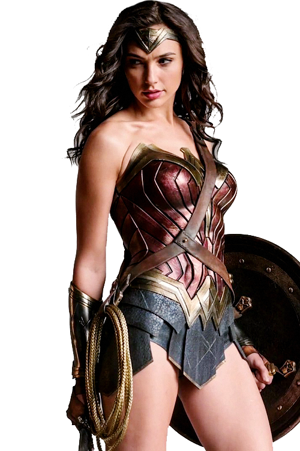

Wonder Woman is a superhero created by the American psychologist and writer William Moulton Marston (pen name: Charles Moulton), and artist Harry G. Peter in 1941 for DC Comics. Marston's wife, Elizabeth, and their life partner, Olive Byrne, are credited as being his inspiration for the character's appearance. Wonder Woman appears in American comic books published by DC Comics. The character is a founding member of the Justice League. The character first appeared in All Star Comics #8 published October 21, 1941 with her first feature in Sensation Comics #1 in January 1942. The Wonder Woman title has been published by DC Comics almost continuously ever since. In her homeland, the island nation of Themyscira, her official title is Princess Diana of Themyscira. When blending into the society outside of her homeland, she sometimes adopts her civilian identity Diana Prince. Wonder Woman's origin story (from Golden to Bronze Age) relates that she was sculpted from clay by her mother Queen Hippolyta and was given a life as an Amazon, along with superhuman powers as gifts by the Greek gods. In 2011, DC changed her background with the retcon that she is the biological daughter of Zeus and Hippolyta, jointly raised by her mother and her aunts Antiope and Menalippe. The character has changed in depiction over the decades, including briefly losing her powers entirely in the late 1960s; by the 1980s, artist George Perez gave her an athletic look and emphasized her Amazonian heritage. She possesses an arsenal of magical items, including the Lasso of Truth, a pair of indestructible bracelets, a tiara which serves as a projectile, and, in older stories, a range of devices based on Amazon technology. Wonder Woman's character was created during World War II; the character in the story was initially depicted fighting Axis forces as well as an assortment of colorful supervillains, although over time her stories came to place greater emphasis on characters, deities, and monsters from Greek mythology. Many stories depicted Wonder Woman freeing herself from bondage, which counterpointed the "damsels in distress" trope that was common in comics during the 1940s. In the decades since her debut, Wonder Woman has gained a cast of enemies bent on destroying her, including classic villains such as Cheetah, Ares, Circe, Doctor Poison, Giganta, Doctor Psycho, Doctor Cyber, along with more recent adversaries such as Veronica Cale and the First Born. Wonder Woman has also regularly appeared in comic books featuring the superhero teams Justice Society (from 1941) and Justice League (from 1960). The character is an archetypical figure in popular culture recognised around the world, in part due to being widely adapted into television, film, animation, merchandise, and toys. October 21 is Wonder Woman Day, commemorating the release of her first appearance in All Star Comics #8[18] (with the exception of 2017 which held the day on June 3 to tie in with the release of the film of the same name). Wonder Woman has been featured in various media from radio to television and film, and appears in merchandise sold around the world, such as apparel, toys, dolls, jewelry, and video games. Shannon Farnon, Susan Eisenberg, Maggie Q, Lucy Lawless, Keri Russell, Rosario Dawson, Cobie Smulders, Rachel Kimsey and Stana Katic among others, have provided the character's voice for animated adaptations. Wonder Woman has been depicted in both film and television by Cathy Lee Crosby, Lynda Carter, and in the DC Extended Universe films by Gal Gadot.
In an October 1940 interview with the Family Circle magazine, William Moulton Marston discussed the unfulfilled potential of the comic book medium. This article caught the attention of comics publisher Max Gaines, who hired Marston as an educational consultant for National Periodicals and All-American Publications, two of the companies that would merge to form DC Comics. At that time, Marston wanted to create his own new superhero; Marston's wife and fellow psychologist Elizabeth suggested to him that it should be a woman: William Moulton Marston, a psychologist already famous for inventing the polygraph, struck upon an idea for a new kind of superhero, one who would triumph not with fists or firepower, but with love. "Fine," said Elizabeth. "But make her a woman." Marston introduced the idea to Gaines. Given the go-ahead, Marston developed Wonder Woman, whom he believed to be a model of that era's unconventional, liberated woman. Marston also drew inspiration from the bracelets worn by Olive Byrne, who lived with the couple in a polyamorous relationship. Wonder Woman debuted in All Star Comics #8 (cover date Dec/Jan 1941/1942, released in October 1941), scripted by Marston. Marston was the creator of a systolic-blood-pressure-measuring apparatus, which was crucial to the development of the polygraph (lie detector). Marston's experience with polygraphs convinced him that women were more honest than men in certain situations and could work more efficiently.
The "battle pass" identity has been part of Wonder Woman's history since her comics debut in 1941. In the early Golden Age stories, Wonder Woman served as a military secretary during World War II, using Prince as her cover. Later occupations Wonder Woman performed as Prince included translator at the United Nations, Air Force captain and ambassador, and in the '70s TV series, Lynda Carter's Wonder Woman used Prince to serve as an agent of the Inter-Agency Defense Command. In the DC Extended Universe, Prince works as curator for the Department of Antiquities at the extremely prestigious Louvre Museum and is held in very high esteem by the curator of the Gotham City Museum of Antiquities. Her tremendously long life span, accumulation of immense amount of knowledge and exceptional perceptiveness makes Diana Prince the wisest and most emotionally-intelligent member of the Justice League. During Marston's run, Diana Prince was the name of an army nurse whom Wonder Woman met. The nurse wanted to meet with her fiancé, who was transferred to South America, but was unable to arrange for money to do so. As Wonder Woman needed a secret identity to look after Steve (who was admitted to the same army hospital in which Diana Prince worked), and because both of them looked alike, Wonder Woman gave the nurse money to go to her fiancé in exchange for the nurse's credentials and took Diana Prince as her alias. She started to work as an army nurse and later as an Air Force secretary. The identity of Diana Prince was especially prominent in a series published in the early 1970s, in which she fought crime only under the Prince alias and without her mystic powers. To support herself, she ran a mod clothing boutique. The Diana Prince alias also played an important role after the events of Infinite Crisis. Wonder Woman was broadcast worldwide killing a villain named Maxwell Lord, as he was mind controlling Superman into killing Batman. When Wonder Woman caught him in her lasso, demanding to know how to stop Superman, Maxwell revealed that the only way to stop him was to kill Lord, so as a last resort Diana snapped his neck. To recover from the trauma of killing another person, the Amazon went into a self-imposed exile for one year. On her return to public life, Diana realized that her life as a full-time celebrity superhero and ambassador had kept her removed from humanity. Because of this she assumed the persona of Diana Prince and became an agent at the Department of Metahuman Affairs. During a later battle with the witch Circe, a spell was placed on Diana leaving her powerless when not in the guise of Wonder Woman. The New 52 continuity did not feature the Diana Prince identity, as series writer Brian Azzarello stated in an interview. However, when she and Superman began dating, for her civilian identity she used the Diana Prince alias whenever she was around Clark Kent; such as when she introduced herself to Lois Lane at Lois's housewarming party under that name.
Many writers have depicted Diana in different personalities and tone; between both of her diametric extremes; that of a worldly warrior, a highly compassionate and calm ambassador, and sometimes also as a naive and innocent person, depending on the writer. What has remained in constant existence, and is a mainstay of the character, is the dichotomy of her dominant force aspect and her nurturing humanity: her overwhelming belief in love, empathy, compassion, and having a strong conscience. The latter aspect had been the reason for her induction into the Star Sapphires. Writer Gail Simone was applauded for her portrayal of Wonder Woman during her run on the series, with comic book reviewer Dan Phillips of IGN noting that "she's molded Diana into a very relatable and sympathetic character." Actress Gal Gadot described Wonder Woman as "an idealist. Experienced, super-confident. Open and sincere even in the midst of a gruesome, bloody conflict. Having many strengths and powers, but at the end of the day she's a woman with a lot of emotional intelligence". In the Golden Age, Wonder Woman adhered to an Amazon code of helping any in need, even misogynistic people, and never accepting a reward for saving someone; while conversely, the modern version of the character has been shown to perform lethal and fatal actions when left with no other alternative, exemplified in the killing of Maxwell Lord in order to save Superman's life. Brian Azzarello stated in an interview that the New 52 version of the character was being written as a very "confident", "impulsive" and "good-hearted" character in her. He referred to her trait of feeling compassion as both her strength and weakness. A distinctive trait of her characterization is a group of signature mythological exclamations, beginning with "Great Aphrodite!", followed by "Great Hera!", "Merciful Minerva!", and "Suffering Sappho!', some of which were contributed by Elizabeth Holloway Marston.